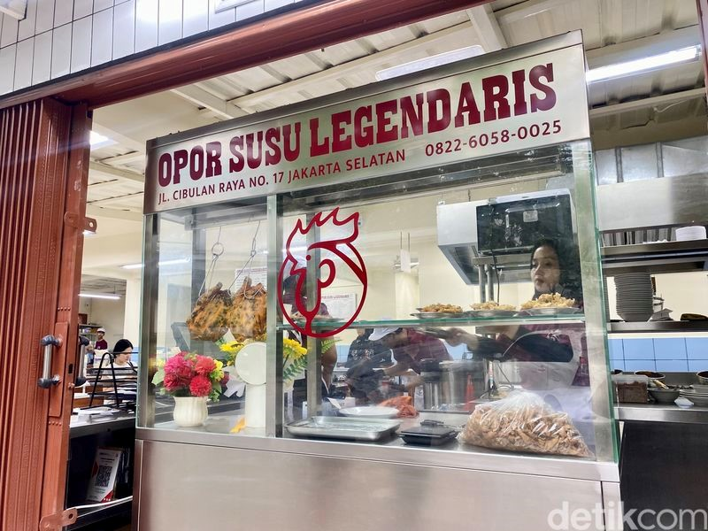
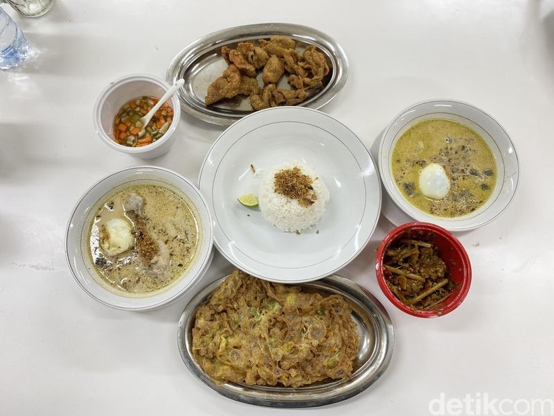
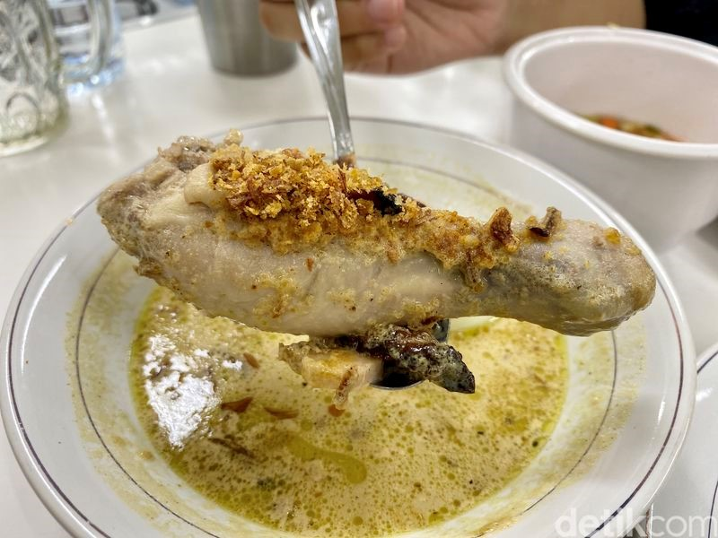

Sonia Basoni - detikFood
Rabu,4 Des 2024
Jakarta - Tempat makan ini meski terbilang baru tapi cukup viral di media sosial. Menu utamanya ada opor kuah susu dengan pilihan daging ayam dan sapi. Kawasan Kebayoran Baru, Jakarta Selatan, memang jadi salah satu destinasi kuliner kekinian yang diminati kaum Milenial dan Gen Z. Banyak tempat makan datang silih berganti, yang paling anyar ada Opor Susu Legendaris.
Tempat makan ini baru buka awal bulan November lalu, tapi sudah terkenal karena sang pemilik, Jonathan Liandi merupakan gamer profesional sekaligus mantan pro player ternama. Setelah sukses di dunia E-sports, Jonathan menjajal bisnis kuliner dengan yang menyuguhkan opor kuah susu. Sebuah inovasi berani untuk sajian tradisional khas Jawa.
Berikut beberapa menu andalan di Opor Susu Legendaris:
1. Opor dengan Kuah Susu
Jonathan Liandi membuat inovasi opor ayam Jawa dengan membuat opor tidak dengan santan tetapi dengan susu sapi. Meski sudah dimodifikasi dengan resepnya tapi cita rasanya tetap legendaris menurut Jonathan. Jonathan tak sendiri, ia menggandeng salah satu temannya yang memiliki resep opor susu ini untuk membuka bisnis kuliner bersama. "Opor di sini mirip seperti soto Betawi, karena kalau kita lihat opor di nasi Padang biasanya isinya hanya ayam saja. Nah, kalau di sini opornya itu yang jadi menu utama kita," tuturnya.
2. Opor Susu Ayam Legendaris
Aroma kuahnya harum mengingatkan dengan opor ayam khas Lebaran. Bedanya di sini rasa kuah opornya lebih ringan dan creamy karena menggunakan susu sapi bukan santan. Selain itu rasa unik dari opor ini muncul dari ayam asap yang ekstra 'smokey' dan sedikit kering. Rasa 'smokey' ini diseimbangkan dengan ayam opor yang lembut dan berempah. Telur rebusnya tak hanya jadi pelengkap saja tapi membuat hidangan opor susu ini jadi komplet. Paket di atas belum termasuk nasi putih (Rp 6.000).
Detail Informasi
Alamat: JL. Cibulan Raya No. 17A, Petogogan, Kebayoran Baru, Jakarta Selatan
No Telp: 0822-6058-0025
Jam Operasional:
Estimasi Harga: Rp 25.000 - Rp 100.000
Tipe Kuliner: Opor susu
Fasilitas: